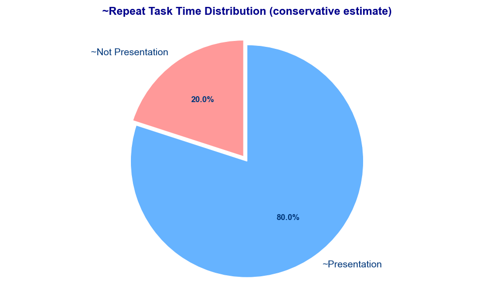
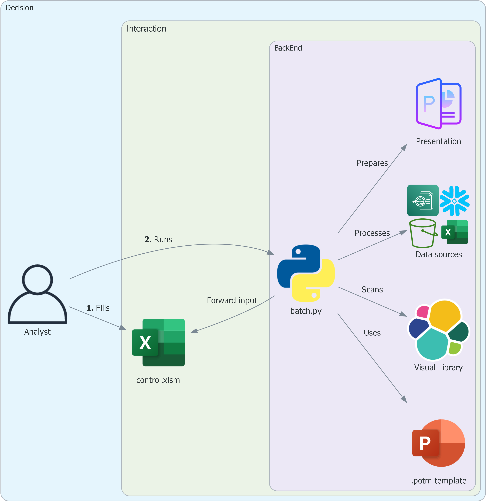
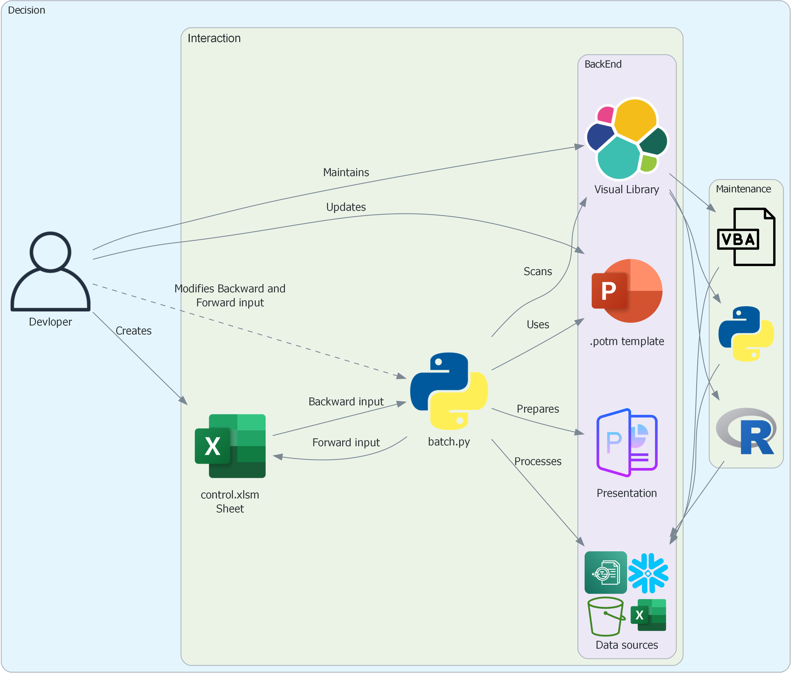
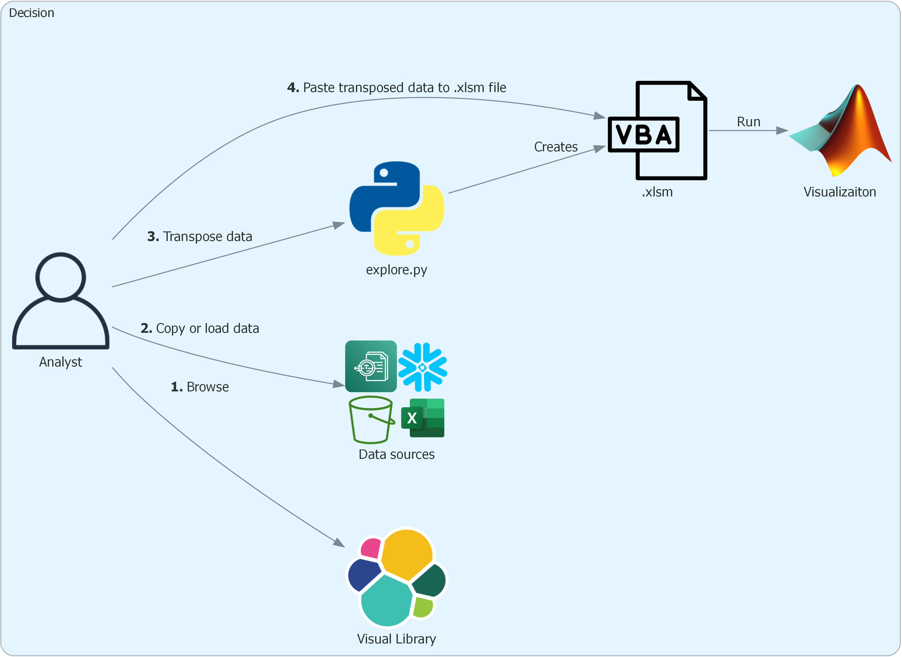
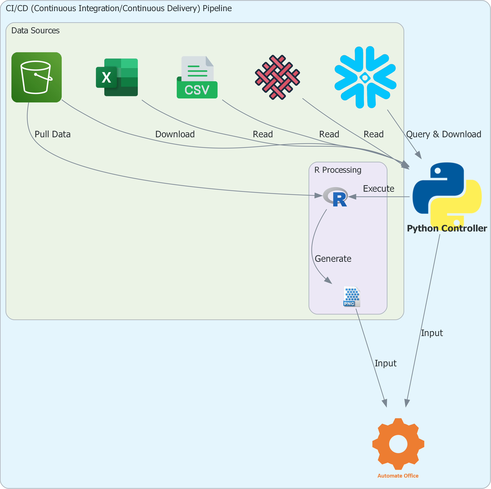

Automate office1¶
About¶
Automation to prepare visualization(s) and slide deck at scale.
┣━ code : User modified main program(s)
┃ ┣━ ao_batch.py : Create .pptm presentation in batch mode.
┃ ┣━ ao_explore.py : Create individual charts/graphs as in Visual Library.
┃
┣━ input : User defined directory
┃ ┣━ ____control.xlsm : Input to align slide(s) and their content.
┃ ┣━ data/ : Input .csv files.
┃ ┣━ img/ : Input image files.
┃ ┗━ templates/ : Reusable .potm template
┃
┣━ output: : Output file format
┃ ┗━ : <report-name>__<yyyymmdd>_<hhmm>.pptm
Automate office integrates excel vba, R and powerpoint presenation elements using python.
The structure is build around taking control of placeholder elements of powerpoint master slide.
The input to prepare powerpoint deck is structured through a control file.
Demo¶
examples\ao_batch.py: Build slide deck.examples\ao_explore.py: Build individual visualizations.
Target¶
Process transformation by eliminating manual steps to prepare visualization(s) and slide deck(s).
- The automation targets to save
~30%of the time taken to work on new presentation related tasks and~80%of the time on repeat tasks. Standardizationto bring muchdesired consistencytoinsights generated by the team.- Adopting
script based visualizationthat are faster and equal to or better than existing options. Building productthatsaves teams timeandbrings new innovation(s)enablinggenerating better insightsfaster.
New tasks

Repeat tasks

Design¶
Project is designed on following ground rules:
What you see is what you get: Visualization or Slide option in Visual Library to guide in choosing available options.Limited to no learning curve: Structure the project that anyone can use the automation irrespective of lack of knowledge of a language.For a task choose software that works best: If excel works better vs any other software then we do that task in excel.Scale, Compatibility, flexibility: Project is designed to be easliy scaled to include large number of visualization(s) providing intutive access to resources needed to build custom visualization and powerpoint presentations. We have tested the codebase across different system combinations (windows 10, 11; Microsoft Office 2016, 2019, 2021, 365, Python 310, 311, 312, 313, R 4.4.3) ensuring programs do not break on known environments. Anyone can contribute to the visualization library following simple rules as laid underdevelopersection.End-to-end automated integration: All components of the project are end-to-end automated, E.g. Visual library is autogenerated using python code so no manual maintenace or development. The automated components are integrated, E.g. The data processing takes color input from the PADAWA docs data table. Most of the components of the automation feed on already existing resources in other atuomation projects (padawa_docs,searchx).
Project uses following softwares:
.py: Python to control the project..bas: VBA to create visualizations in Excel..potm: Powerpoint to create reusable slide templates..md: Markdown integrates the project and make it easily accessible..R: R to create visualizations not possible through Excel (vba) or Python respectively.
Usage¶
batch.py¶

In batch mode the sheet named calibration in ____control.xlsx file is used to control the number of slides, type of charts, formatting, text and image input to a presentation.
Just like explore.py the analyst can see if certain visualizations or slides are present in Visual library, pick and choose the charts and slides that are desired and reference the same in batch.py file.
Developer

A developer needs to understand complex relationship between different elements of the project:
-
Visual library- The code and output should be the same named file e.g.
bar.basand its corresponding `bar.jpg' file. - Only
.basfiles to have.jpgoutput, other code can have other output types like `.png'. - Keep the variable names that control the charts consistent across codes irrespective of language.
- Keep things organized in folders with parent being
visaul_libraryand child folders likecompare,distribution,flowand so on. - Ensure no repeats in the slide generated by
calibrationsheet.
- The code and output should be the same named file e.g.
-
____control.xlsm- Maintain the structure of the sheets in the control file.
- Understand that the
masterslide and output in folderoutput\learnare related to how this file is derived.
-
batch.py- Understand the dependencies and their relationship with all other elements that the program works with.
explore.py¶

Browse: Check if a visualization that is expected exists in the Visual library.Copy or load data: Copy data into clipboard from the data source(s).Transpose data: Runexplore.pyStep2to transpose data intoxyzvconvention.Paste transposed data to .xlsm file: Runexplore.py 2.3and paste transposed data tocell A1in file generated when initializingexplore.py.
Pipeline¶

CI/CD (Continuous Integration/Continuous Delivery) Pipeline approach allows us to do as much as possible, an end to end integration, eliminating manual data preparation steps in the process.
Future development¶
- Expand
Visual libraryto include most of the frequently used visualizations. - Close project libraries for targeted use (right now code is open).
- Development of
adhoc.py(currently code heavy) just in line withexplore.pyandbatch.py. - Comments on slides to be powered by either of the feasible solution(s):
- Local
GPT(Generative Pre-trained Transformer) engine. ML(machine learning) based model trained on.ppt* title corpusleveragingsearchx.MCP(Model Context Protocol) process deployment.
- Local
-
Please move around the template master elements as the output .pptx file is less organzied. ↩